SAN: Location Optimizer
Table of Contents
1 Abstract
The location optimizer takes all the data that is available and tries to find the coordinates of the nodes in space.
Input:
- which node is connected to which node and on which port,
- tilt angle of nodes (optional).
Output:
- coordinates of nodes in space,
- tilt angle of spheres for display (optional).
The location optimizer does its calculations under the assumptions that:
- the distance of a connection is 1,
- the angle between connections is the tetrahedral angle (≈ 109.5°).
The information here is only relevant for the version of SAN that was current at the time this document was published.

Figure 1: Dodecahedron built by two little girls at the end of Maker Faire Rome: Convergence successful!
2 Nodes

Figure 2: Geometry of a node with ports 1–4
Properties of a node:
- A node may also be called a sphere, referring to the physical elements in the SAN construction kit.
- There is one special node, the root node:
- It connects the computer to the network.
- It has one USB port that connects to the computer.
- It has only one port: 1
- It’s ID is:
^
- Non-root nodes have four ports: 1, 2, 3, and 4
- Each non-root node has a unique ID: A–Z
- A node’s axis is relevant if there is information about its tilt angle. The tilt angle is measured by an accelerometer. As of this writing there is only one sphere that contains an accelerometer.
3 Genetic algorithm for location optimization
3.1 Summary
A genetic algorithm is used to approximate the positions of the points in space. This algorithm is called location optimizer. After optimization, ideally all neighboring nodes have a distance of 1, and the angles between the connecting vectors match those on the spheres. The algorithm however is flexible enough to find solutions even if distances or angles have been violated. See examples below.
3.2 Steps
Initialize: Generate a population of \(n\) individuals. Each individual \(i\) is described by a chromosome \(X_i\). A chromosome contains a list of coordinates. The coordinates describe a distribution of points in space. Initially the coordinates are chosen randomly.
Example population for a network composed of nodes \(C\), \(B\), and \(D\):
\(x_C\) \(y_C\) \(z_C\) \(x_B\) \(y_B\) \(z_B\) \(x_D\) \(y_D\) \(z_D\) \(X_1\) -0.87 -0.59 0.51 0.01 -0.18 0.92 -0.88 -0.45 -0.61 \(X_2\) 0.14 0.39 0.37 0.30 -0.61 -0.25 0.40 0.21 0.75 \(X_3\) 0.40 -0.54 0.00 -0.43 0.94 0.29 0.37 0.76 -0.74 … \(X_n\) 0.08 -1.00 0.71 -0.68 -0.26 0.33 -0.64 0.94 0.95 - Reproduce:
Pair: Randomly select pairs of individuals. These individuals will act as parents in the next step.
Example pair: \((X_3, X_1)\) (third individual and first individual)
- Create offspring. For each pair of parents:
Crossover: Form a child chromosome by taking one part of the chromosome from the first parent and the other part from the second parent.
Child created from a crossover of the above example pair:
\(X_3\): \(x_C\) … \(x_D\) \(X_1\): \(y_D\) … \(z_D\) 0.40 -0.54 0.00 -0.43 0.94 0.29 0.37 -0.45 -0.61 The location of the crossover is random.
Mutate: Randomly change coordinates in the child chromosome.
Example mutation of the above child:
0.40 -0.54 -1.50 -0.43 0.94 0.29 0.37 -0.45 0.40
Find fitness: For each child determine how close the points in the chromosome are to an optimal distribution. An optimal distribution is one where:
- the distance between each two neighboring nodes is 1,
- the angle between each two connections from one node is the tetrahedral angle.
The deviation to the optimal distribution is quantified as fitness and assigned to each child.
- Natural selection: Create a new population by combining:
- the \(n - 1\) best children,
- the best individual from the previous generation.
- Display: Render the best individual in the new population on screen.
- Iterate: go to step 2.
3.3 Problem
Genetic algorithms tend to get stuck in local minima. In that case all individuals have converged to the same non-optimal solution. Mutation of single coordinates worsens the fitness of individuals, and so they don’t carry over to the next generation. Evolution has stopped.
3.4 Fitness
The fitness of an individual is calculated based on the sum of all deviations. For each node up to four deviations are calculated, depending on how many neighbors it has.
What follows is an example of the calculation of the deviations for node \(A\) with a full four neighbors \(B\), \(C\), \(D\), and \(E\).
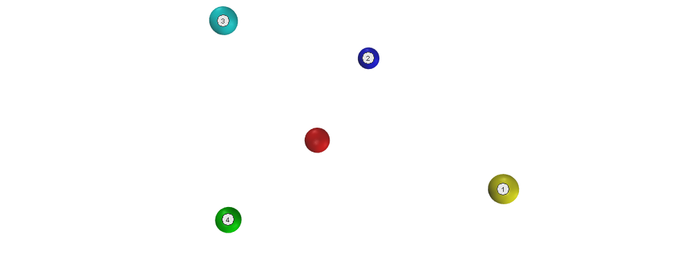
3.4.1 Deviation of first neighbor
Correct neighbor positions lie on a sphere of radius 1. As the position of the expected neighbor \(1'\), we take the point that is closest to the position of the existing neighbor \(1\) (deviation highlighted in red):
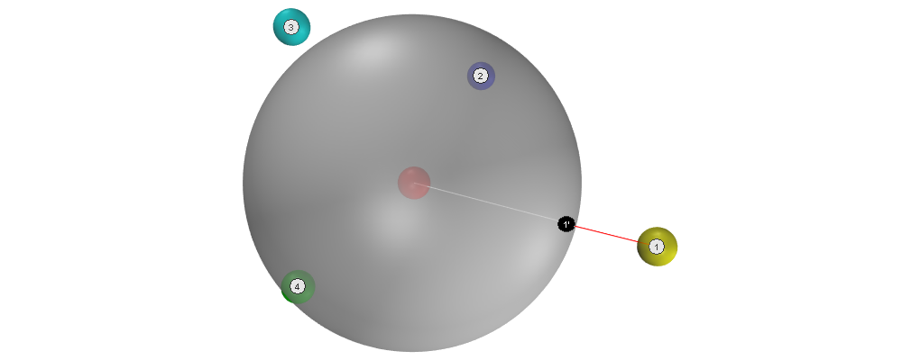
The deviation is the difference between the two positions:
\(D_A1 = 0.50\)
3.4.2 Deviation of second neighbor
Correct neighbor positions are at the tedrahedral angle to the connection between the center of the node and the position of its first expected neighbor \(1'\). As they are required to have a distance of 1 from the center, the set of all correct positions lies on a circle. As the position of the expected neighbor \(2'\), from this set we choose the point that is closest to the exising neighbor \(2\).
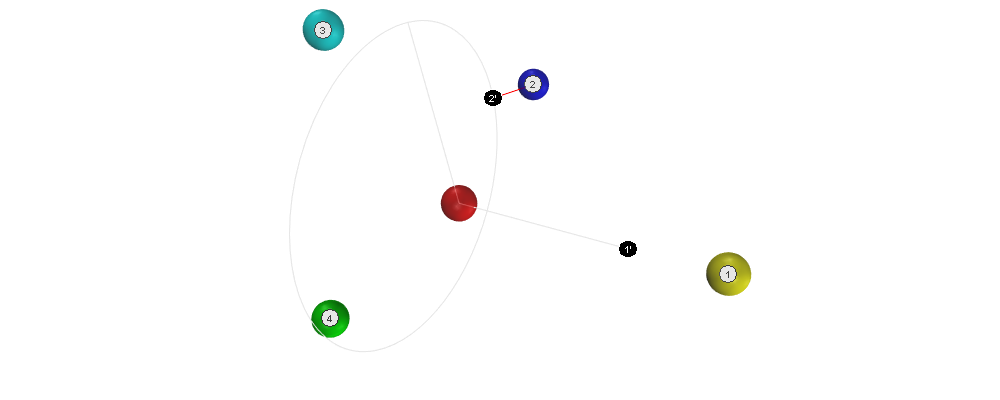
Deviation:
\(D_A2 = 0.28\)
3.4.3 Deviation of third and fourth neighbors
Based on the positions of the first two expected neighbors \(1'\) and \(2'\), we can calculate the positions of the remaining expected neighbors \(3'\) and \(4'\).
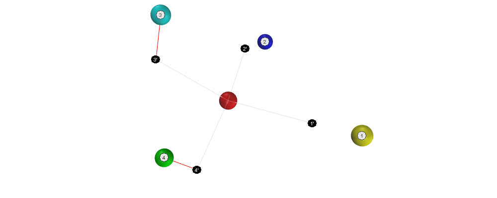
Deviations:
$DA3 = 0.49, \(D_A4 = 0.63\)
Now we can calculate the total deviation of all the neighbors of the node:
\(D_A = D_A1 + D_A2 + D_A3 + D_A4 = 1.90\)
After \(D\) has been calculated for every node, the sum of all these values can be calculated. For a network with nodes \(A\), \(B\), \(C\), \(D\), and \(E\) that would be:
\(D = D_A + D_B + D_C + D_D + D_E\)
To get the fitness \(F\) of the current chromosome, we simply reverse the sign:
\(F = -D\)
As the value of the deviations is negative, it holds that: The higher the fitness, the closer the individual is to an optimal solution.
4 Simulation
Assembling the structure can be simulated. This is useful for testing the location optimizer without the physical construction kit.
Setup:
- Install Node.js and the Yarn package manager.
- Clone the SAN repository from: https://github.com/feklee/san/
Install all necessary dependencies and build the frontend (on Windows call
rollup.cmdinstead ofrollup):$ cd webapp $ yarn install $ ./node_modules/.bin/rollup --config
Start the simulation:
yarn start simulate
Open the SAN web app: http://localhost:8080
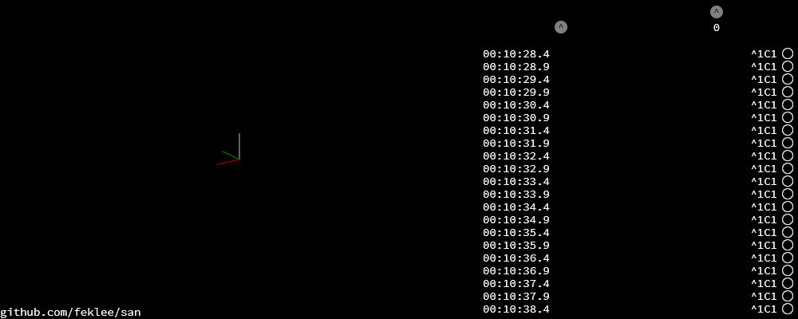
To navigate in 3D in the canvas on the left side, use the mouse.
Go back to the command line and connect a node to the root node:
+^1C1
This connects port
C1(port 1 on node C) with^1(port 1 on the root node). The result is immediately visible in the web app.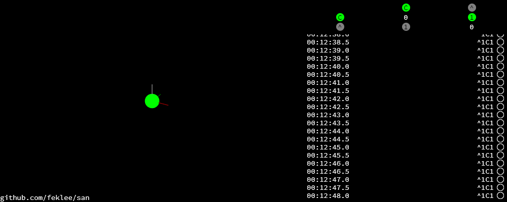
On the top right side you see an adjacency matrix. The numbers in the matrix refer to the connected ports. On the bottom righ side you see a log of the information that the webapp receives from the structure. On each line there is a timestamp on the left side. The circle on the right means that there is no information about a tilt angle for the connected node.
Add additional nodes:
+C2B1 +B3D4
This connects
B3(port 3 on node B) toC2andD4toB3.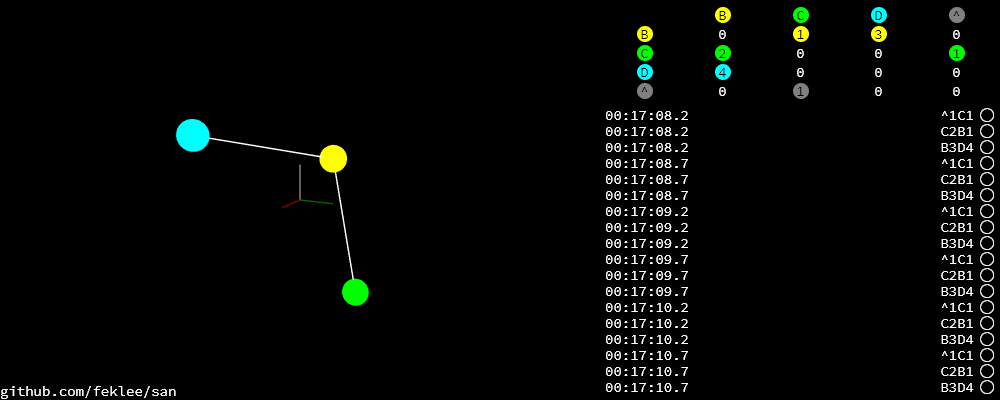
5 Examples
5.1 1:1 connection
Just two nodes connected.
5.1.1 Input
5.1.2 Example solution
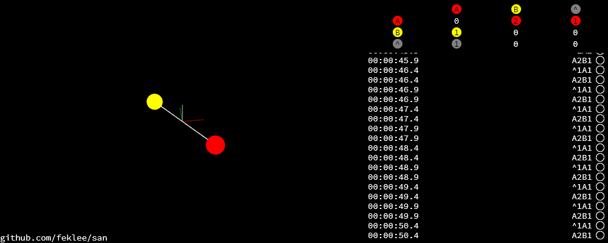
Coordinates: 1-1-coordinates.tsv
5.2 Hexagon
This is the smallest loop that can be built without violating the tetrahedral angles.
5.2.1 Input
Simulation:
+^1A1 +A2B1 +B2C1 +C2D1 +D2E1 +E2F1 +F2A3
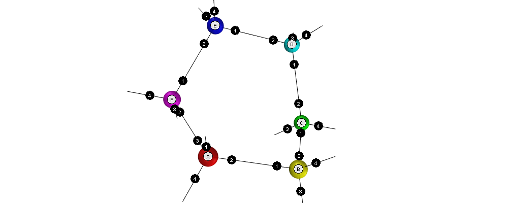
Adjacency matrix (numbers are ports): hexagon-adjacency.tsv
5.2.2 Example solution
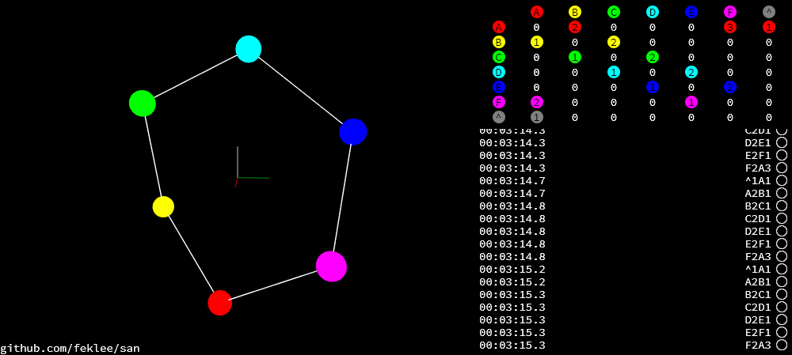
Coordinates: hexagon-coordinates.tsv
5.3 Pentagon
Note that the interior angles of a pentagon are 108°. That is close to but not identical to the tetrahedral angle of 109.5°. Nevertheless the algorithm is able to approximate a solution. Even for nodes connected in a triangle it finds a solution!
5.3.1 Input
Simulation:
+^1A1 +A2B1 +B2C1 +C2D1 +D2E1 +E2A3
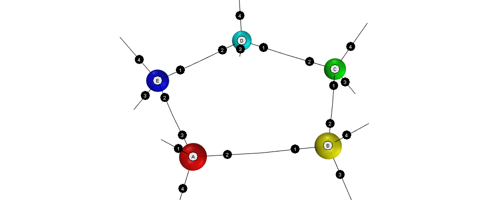
Adjacency matrix (numbers are ports): pentagon-adjacency.tsv
5.3.2 Example solution
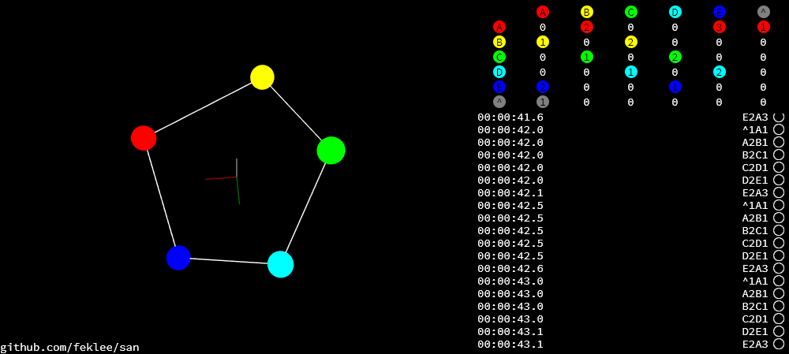
Coordinates: pentagon-coordinates.tsv
5.4 Dodecahedron
The dodecahedron consists of twelve pentagon sufaces. There are 20 unknown edges, i.e. nodes in the network. This means 60 variables have to be found.
5.4.1 Input
Simulation:
+^1A4 +A1B2 +A2E1 +A3F1 +B1C2 +B3H1 +C1D2 +C3J1 +D1E2 +D3L1 +E3N1 +F2O2 +F3G3 +G1P1 +G2H2 +H3I3 +I1Q1 +I2J2 +J3K3 +K1R1 +K2L2 +L3M3 +M1S1 +M2N2 +N3O3 +O1T1 +P2T3 +P3Q2 +Q3R2 +R3S2 +S3T2
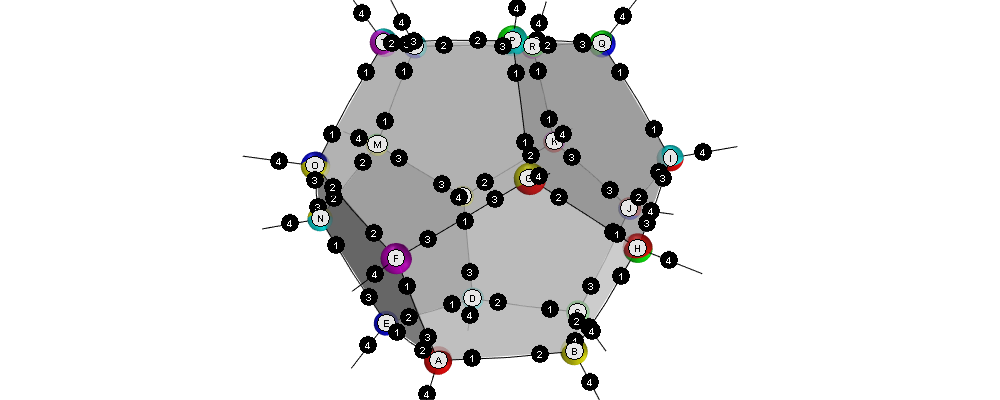
Adjacency matrix (numbers are ports): dodecahedron-adjacency.tsv
5.4.2 Example solution

Coordinates: dodecahedron-coordinates.tsv
5.4.3 Example bad solution
In most runs, at least nine out of ten times, the genetic algorithm does not find a good solution. It gets stuck in a local minimum.
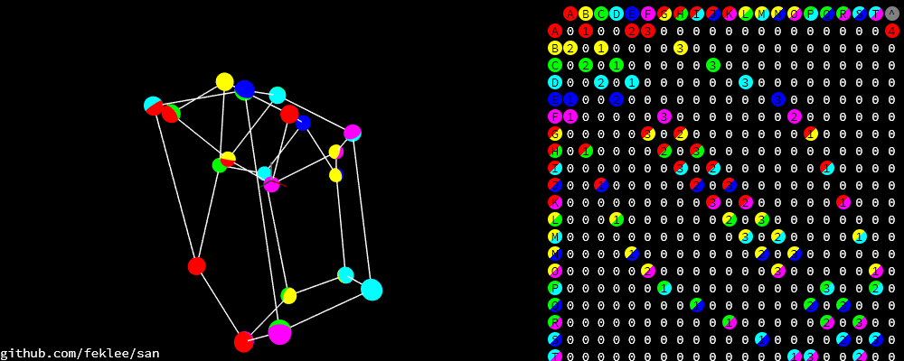